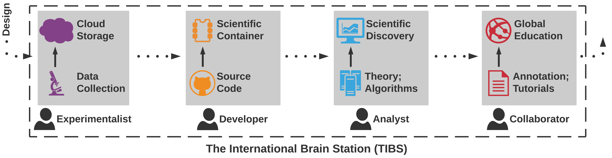
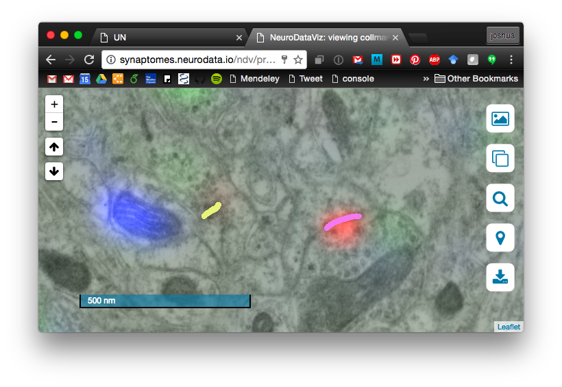

class: center, middle name:opening ## The International Brain Station (TIBS) <br><br> .center[ Joshua T. Vogelstein <br> JHU Kavli Neuroscience Discovery Institute <!-- {[bme](http://www.bme.jhu.edu/),[icm](http://icm.jhu.edu/),[cis](http://cis.jhu.edu/),[idies](http://idies.jhu.edu/),kavli,[cs](http://engineering.jhu.edu/computer-science/), [ams](http://engineering.jhu.edu/ams/), [neuro](http://neuroscience.jhu.edu/)} | [jhu](https://www.jhu.edu/) --> <br> questions: [jovo@jhu.edu](mailto:jovo at jhu dot edu) <br> slides: <http://brainx.io/UN> ] --- ### History <br> - Global Brain Workshop, April 5-6, 2016 - 60+ scientists - 15+ observers from international funding community - 12+ countries represented <!-- - Open Data Ecosystem for Neuroscience, July 25-26, 2016 --> <!-- - Coding sprint for a new neuroimaging data processing platform, August 1-4, 2016 --> <br> .center[Ideas evolved from discussions <br> before, at, and after workshops.] --- ### Inspirational Work <br> 1. Human Genome Project in molecular genetics 2. Sloan Digital Sky Survery in cosmology <br> Reference data and cloud ecosystems revolutionized these disciplines --- class: center ## What is TIBS? <br> A living *ecosystem* that enables anybody to utilize or contribute <center></center> (4 scientist roles) --- ### Design Goals <br><br> - .s[Democratize] science (anybody can contribute and utilize) - .s[Pain points] eliminate for each stage of discovery - .s[Reference] data and tools - lower the barrier to entry - .s[Sensitive] culturally - .s[Mobile] compliant (+3.2B people) --- ### Stages of Scientific Discovery <br> 1. Data - data collection dashboards 2. Store - multimodal cloud storage 4. Algorithms - reference pipelines 3. Containers - continuous integration services 5. Theory - data modeling bots 6. Analyses - digital notebooks 6. Annotations - interactive environments 5. Design - quality/control trade-off calculator 5. Search - metadata query standards 4. Educate - digital multilingual documentation/tutorials .center[ Building on the shoulders of everyone. ] --- ## Preliminary Events <br> - Open Data Ecosystem for Neuroscience, July 2016 - Future and Present of US Brain Initiative, August 2016 - Coordinating Global Brain Projects, September 2016 - Global Brain Lab, September 2016 - NSF NeuroNex RFP, October 2016 --- ### Micro-Prototype 1: EM+AT Data <br> .pull-right[] .pull-left[ 1. Data - Allen Institute 2. Store - JHU+Amazon 4. Algorithms - Janelia 3. Containers - JHU via Docker 5. Theory - Duke 6. Annotations - UNC ] <br><br> Everyone meets at TIBS Live demo: https://goo.gl/JPDTqR --- ## Expected Outcomes <br><br> - Facilitate global collaborations - Inspire open science - Enable success of grand challenges for brain science - What makes our brains unique? - How does the brain solve the complex problems of intelligence? - How can we augment mental health decisions with data? - Translate ideas to other disciplines --- ## Next Steps <br> - Build international coalition - Continue building & expanding prototypes - Inspire cultural shift in neuroscience (ODEN) --- class: middle, center # Questions? <!-- ### Funding --> <!-- <br /> --> <br> <br> <!-- ____ --> e: [jovo@jhu.edu](mailto:jovo@jhu.edu) w: [brainx.io](http://brainx.io) <!-- ____ --> <!-- [more slides](http://docs.neurodata.io/ndintro/more.html) -->